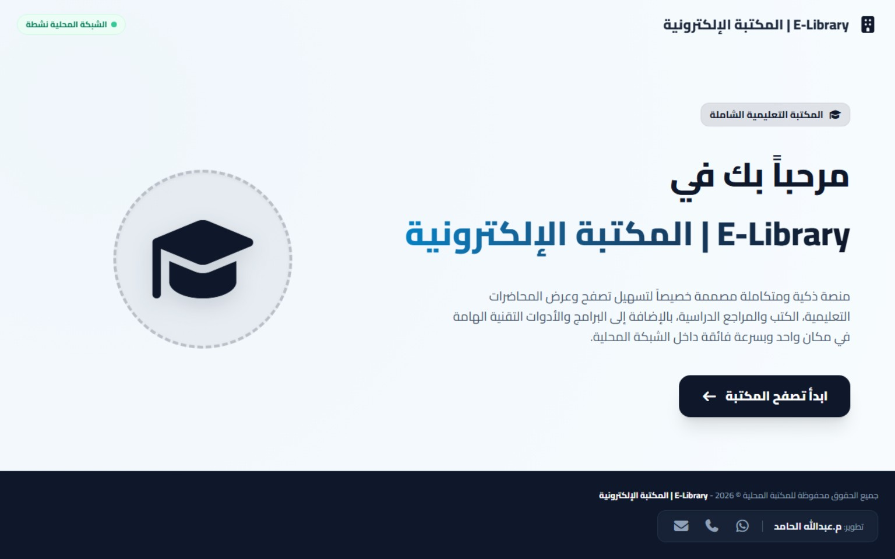
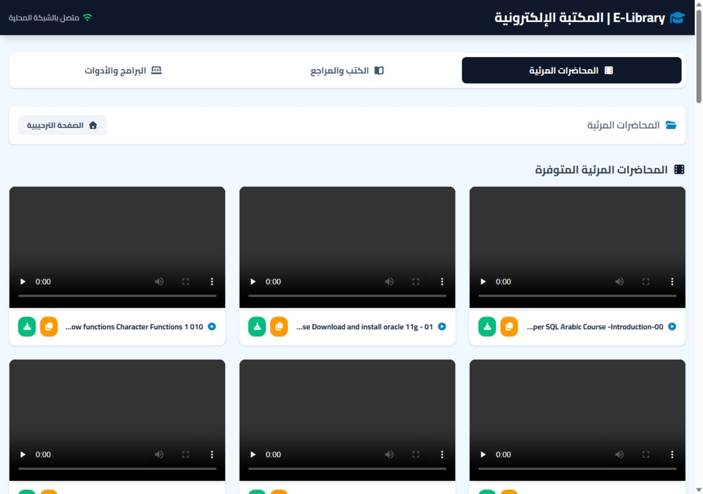
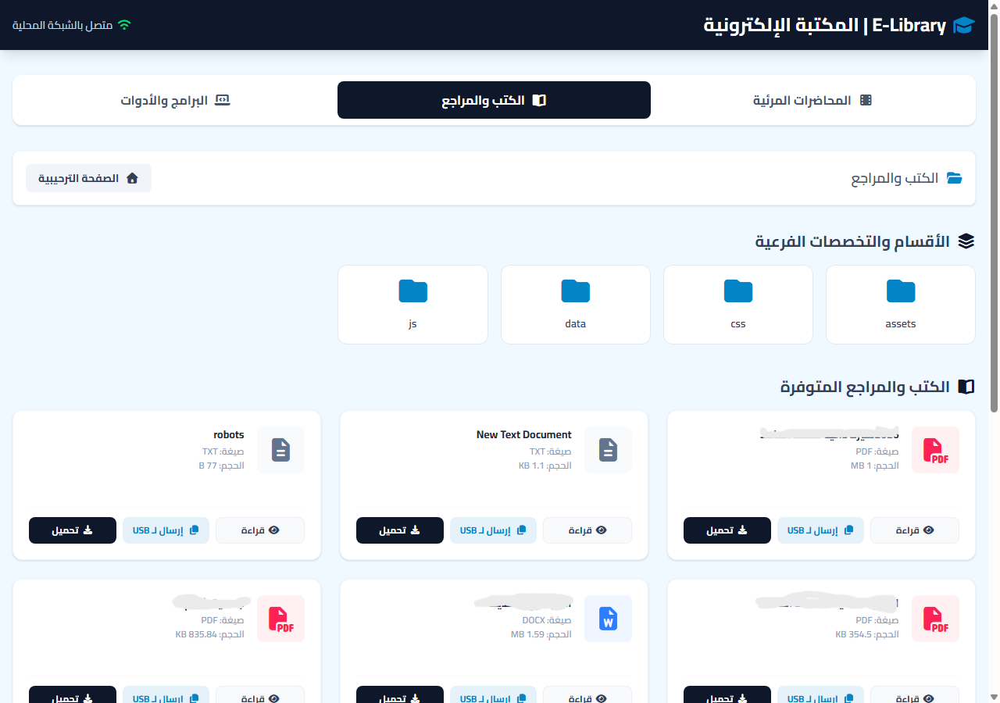
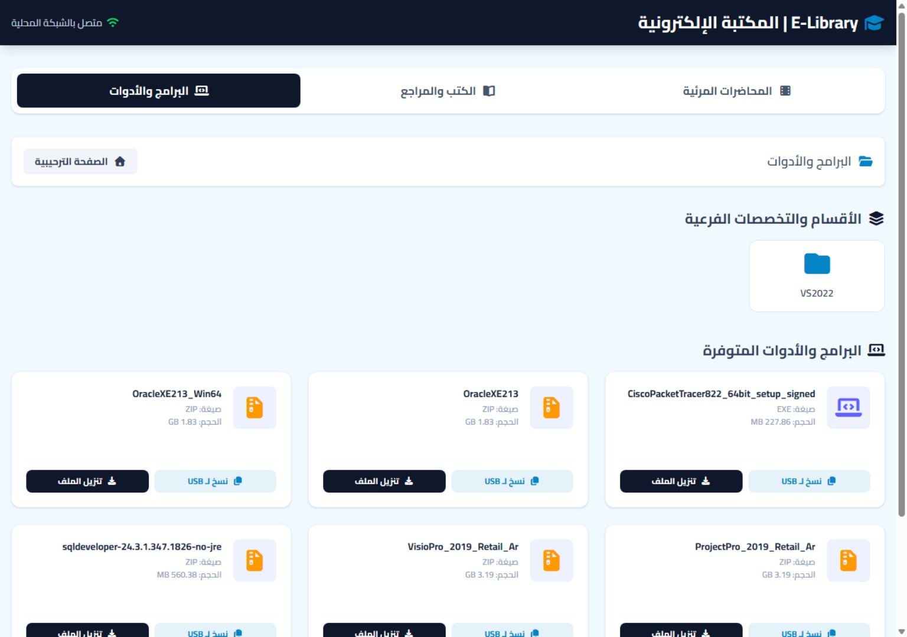
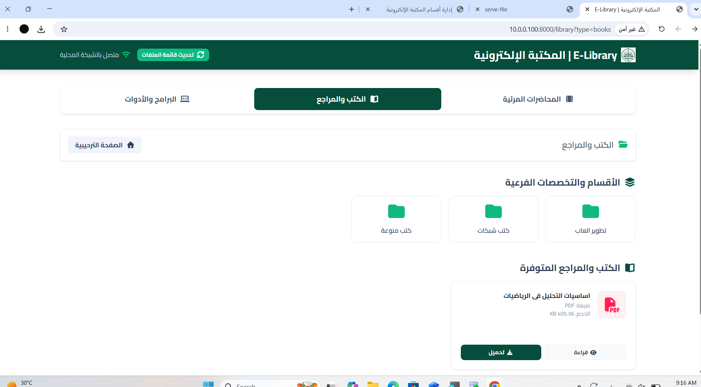

مقدمة عن المكتبة
المكتبة الإلكترونية منصة تعليمية داخلية تتيح للطلاب تصفح الدورات والمحاضرات والكتب والمراجع والبرامج عبر الشبكة المحلية للكلية، دون الحاجة إلى الإنترنت العام.
⚡ سرعة التصفح
الوصول إلى الملفات التعليمية عبر خوادم الكلية.
📶 داخل الشبكة المحلية
لا تحتاج إلى باقة إنترنت عامة عند الاتصال بشبكة الكلية.
📚 محتوى تعليمي
دورات ومحاضرات وكتب ومراجع وبرامج تقنية.
طريقة الدخول إلى المكتبة
- اتصل بشبكة الكلية عبر Wi-Fi أو كابل الشبكة.
- افتح متصفح الإنترنت على الهاتف أو الحاسوب.
- أدخل العنوان المحلي: http://ahgaff-cse.lib:8000
- اضغط Enter. يجب أن يكون جهازك متصلًا بشبكة الكلية.

الصفحة الترحيبية
من الصفحة الترحيبية اضغط زر ابدأ تصفح المكتبة للانتقال إلى أقسام المحتوى واستعراض المواد التعليمية.
أقسام المكتبة الرئيسية
أ) الدورات والمحاضرات المرئية
يضم هذا القسم المحاضرات المرئية والدروس المسجلة. تختلف خيارات التشغيل والتنزيل حسب الملف المتوفر في المكتبة.

ب) الكتب والمراجع التعليمية
يحتوي هذا القسم على الكتب والمراجع والملفات التعليمية، وقد تتوفر خيارات القراءة المباشرة أو تنزيل الملف.

ج) البرامج والأدوات
يضم البرامج والأدوات التقنية وملفات التثبيت المستخدمة في المعامل والتطبيقات العملية.

تصفح التخصصات والمجلدات الفرعية
داخل كل قسم قد تظهر مجلدات فرعية حسب التخصص أو المادة أو نوع المحتوى. اضغط المجلد المطلوب لعرض محتوياته.
- مسار التصفح: يوضح القسم أو المجلد المفتوح حاليًا.
- العودة للمجلد الرئيسي: استخدم زر العودة الظاهر في واجهة المكتبة.

دليل الأيقونات
| الأيقونة / الزر | الوظيفة |
|---|---|
| المجلد | فتح مجلد واستعراض ما بداخله. |
| قراءة / عرض | فتح الملف في المتصفح إذا كان نوع الملف مدعومًا. |
| تنزيل الملف | حفظ الملف على الهاتف أو الحاسوب. |
| مشغل الفيديو | تشغيل المحاضرة المرئية والتحكم بالصوت والتقديم والتأخير. |
إرشادات عامة للطلاب
- تأكد من اتصال جهازك بشبكة الكلية قبل فتح رابط المكتبة.
- استخدم متصفحًا حديثًا للحصول على أفضل تجربة.
- تحقق من وجود مساحة كافية قبل تنزيل الملفات الكبيرة.
- تستطيع النقر على صور هذا الدليل لفتحها بالحجم الكامل.
رابط المكتبة الإلكترونية ورمز QR
افتح الرابط من جهاز متصل بشبكة الكلية، أو امسح رمز QR بكاميرا هاتفك.